The toy icons read as playful more than professional. Each version below keeps the machine, the person and the red, and changes only what is inside the dome. The little black characters are gone in all of them. Flip between them full screen, with the headline in place. Once one is picked, the opening swirl, the capsules and the film are re-rendered in that material.
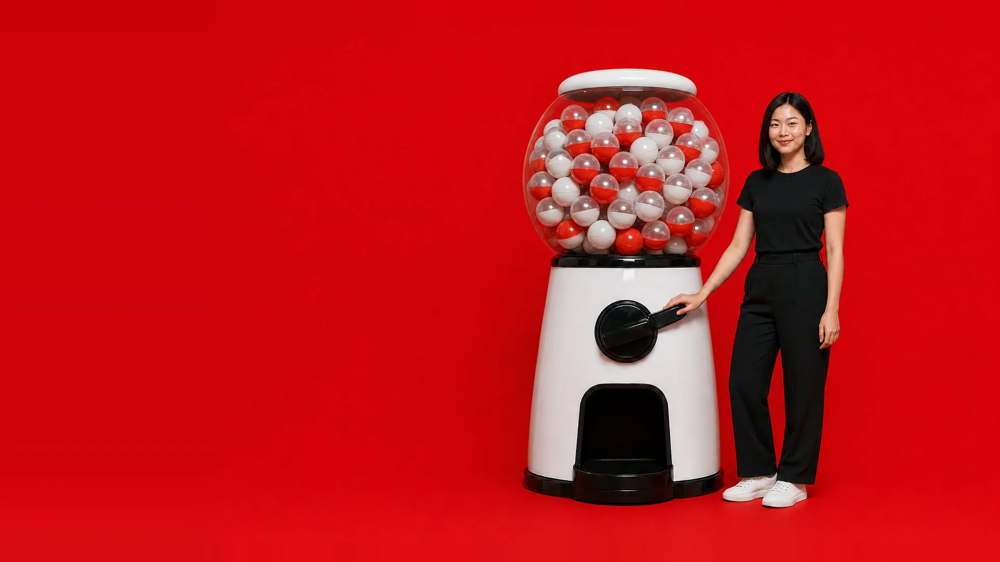
Plain red and white capsules, like a real machine. The services stay a surprise until one opens.
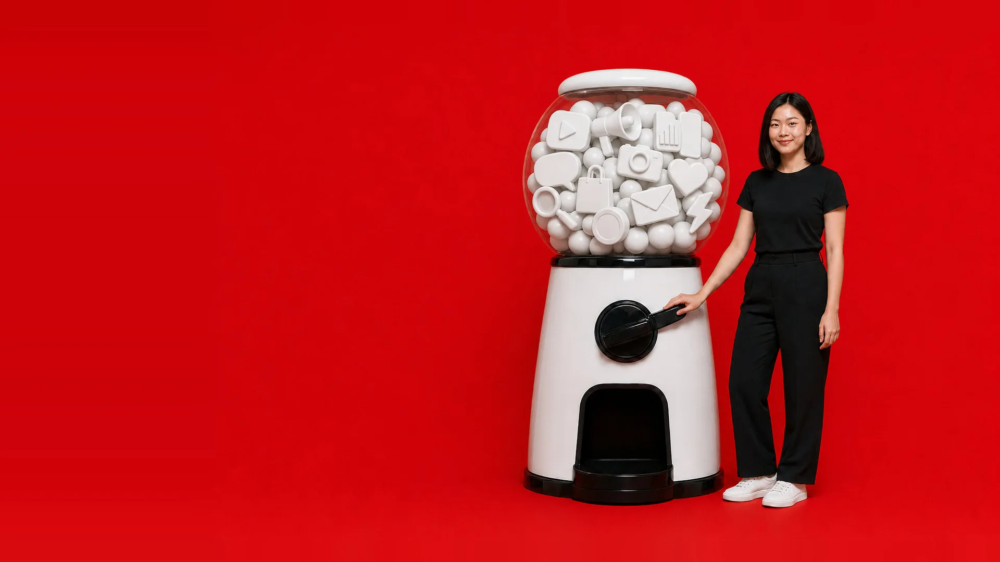
The same marketing icons in one matte white material. Calm and clean.
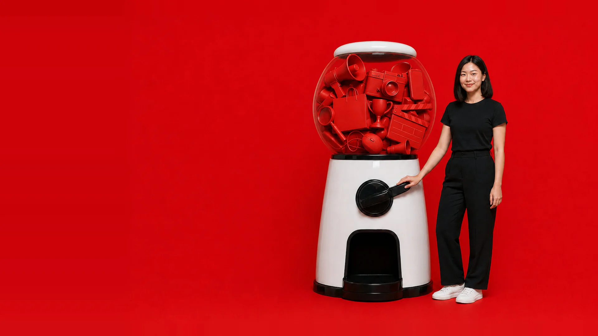
Real objects all sprayed brand red, like an art-directed still life.
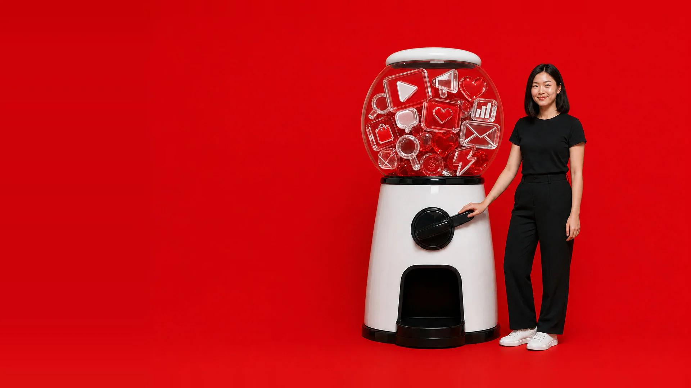
Icon shapes in clear and red glass. The most premium reading.
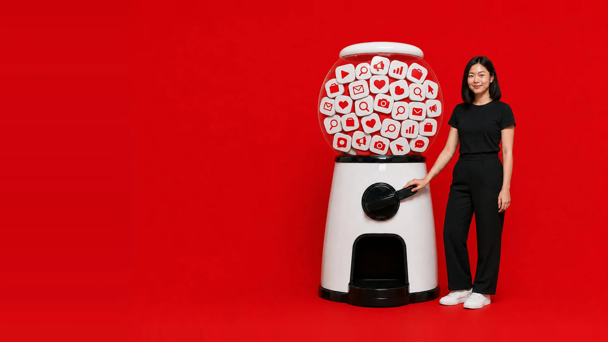
Flat white tiles with simple red pictograms, like app icons.
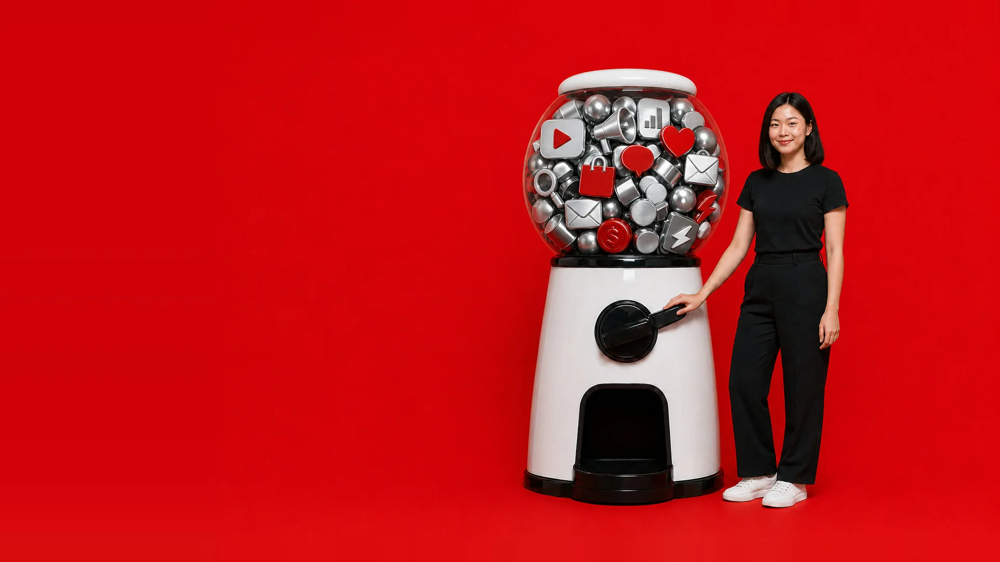
Icons machined from aluminium and steel, a few in red.
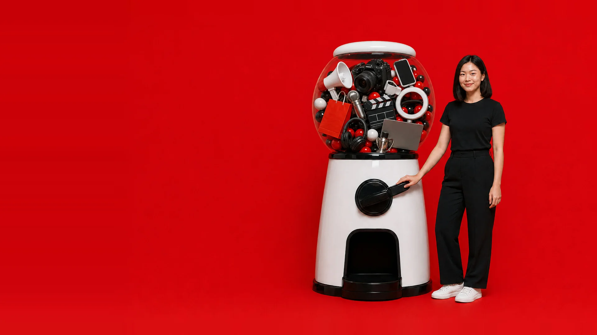
The real tools of the job: camera, megaphone, clapperboard, ring light, laptop.
21, 22 and 32 joined into one idea. You open among the toys circling the headline. Scroll, and the camera pulls back: it is all inside a capsule machine, with a person at the knob. Scroll on, and four capsules open into the four services. Tap a capsule to jump to that service. The sections below the hero are the ones from the current pick, unchanged.
The hero as it plays on a laptop: the swirl, the pull back to the machine, the four capsules.
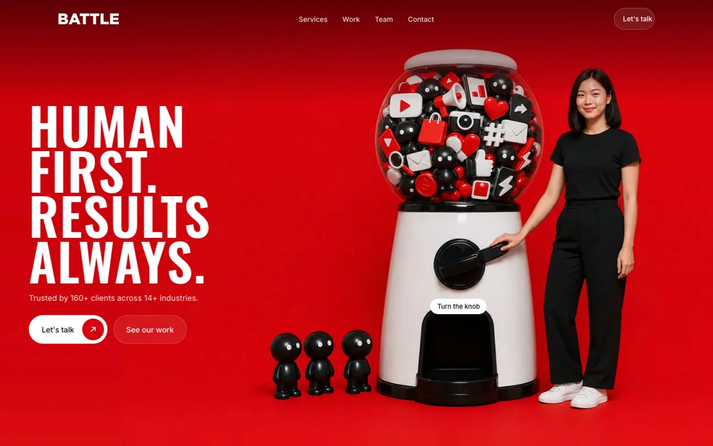
Scroll it yourself. On a phone the hero is a still and nothing is pinned. The person is a stand-in for a real team member, and the film is a 720p draft that the final build re-renders sharper.
| From | The note | What this version does |
|---|---|---|
| Ian | One creative direction, with one motif. | One motif: the capsule machine. The opening swirl, the person, the four services and the capsule shapes lower down all come out of it. One page instead of three. |
| Sue | “I like 22 but maybe on 21 red BG and with different header.” | The opening is 22's ring of objects on 21's red, shot as one scene. The header is “Human first. Results always.” |
| Sue | “32 gachapon… header begins with zoom in only on the pile of elements and when it scrolls, zooms out to see gachapon machine and continue scroll to dispense out different digital marketing services.” | The film does this in three beats: the pile, the machine, then four capsules opening into the four services. |
| Sue | “Try the swirling feeling but the characters and red more like the right side. Like getting lost in the universe of digital marketing. Then inside the site can play with more swirling motion and getting tangled.” | The first screen is the swirl around the headline, on red, with the black toy characters. Lower down, the analytics section is a tangle of numbers that straightens into three moves. |
| Sue | “Do we want so literal human?” | One person, calm, at the knob. The toys carry the fun. She is a stand-in: the final shot would be a real Battle team member. |
| Ian | A short motion preview of 22 + 21 and of 32. | The 17-second clip above is that preview, as one film. |
| Ian | Less AI and futuristic. Real team, behind the scenes, campaign visuals. | A studio photograph look, nothing sci-fi. The team and case sections use Battle's own photos. |
| Ian | Fewer scroll-gated reveals. Breathing space. | Two scroll scenes on the whole page: the hero film and the analytics plan. Everything else reads without waiting, and the knob skips the film in one click. |
| Ian | Stronger calls to action. | “Let's talk” sits in the nav, the hero, every service, the chat reply and the closing section. Each one leads to the 15-minute form, which opens WhatsApp with the goal filled in. |
| Ian | Mobile. | Phones get a still hero, no pinned scenes and taps instead of hovers. Checked at 390 px. |
| Ian, Sue | Client logos in their original colours. “Trusted by 160+ Clients”, “Across 14+ Industries”. | Done, on white capsules. |
| Ian | Services straight after the logos. Drop Interactive Marketing Battle and Growth Stack. | Done. |
| Sue | Hero title “Human First. Results Always.” with her body copy. Then: Proven Business Impact as four in one row, From Confusing Analytics to Clear Plan, Battles We've Won, Meet Your Growth Partners, Got 15 Minutes? Let's Talk. | Same order, same titles, her copy word for word. |
| Deck | “Which Digital Marketing Service Do I Need?” with the five headaches. | The five headaches are a chat. Pick one and Battle replies with the service that fits. |
| Kickoff | More corporate and professional without losing the fun. A young team, shown professionally. | One composed person, clean type and a lot of space. The toys and characters keep it playful. |
| Brand guide | Red, black and white only. | Only those three. Oswald headlines, Inter text, DIN numbers. |
| Kickoff | The homepage must be fast. | The first picture is 115 KB. The film frames load after it, and phones never download them. |
David on v11: it kept v9's Rubik's cube style, which is not wanted, and the version before it is better. That version is below, with the two things fixed since: tapping a line in the chat now glides to Battle's reply, and the 32 hero is rebuilt to the render the group picked.
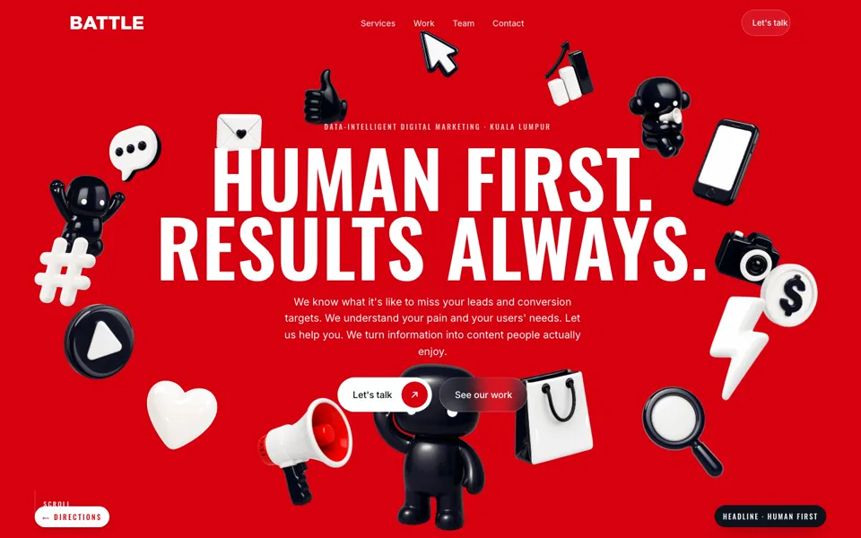
Hero with two people and the toy ring, then the page's own sections: logo capsules, service rows that flood red, the chat, four impact numbers, thirty metrics resolving into three moves, the case list, the team, the 15-minute call.
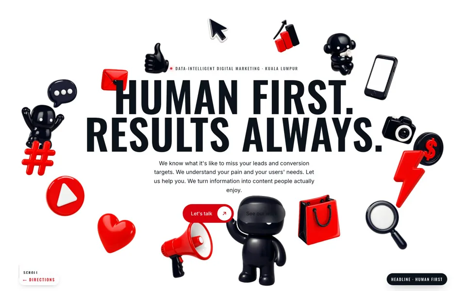
The same sections under the white hero and its second pair of people.
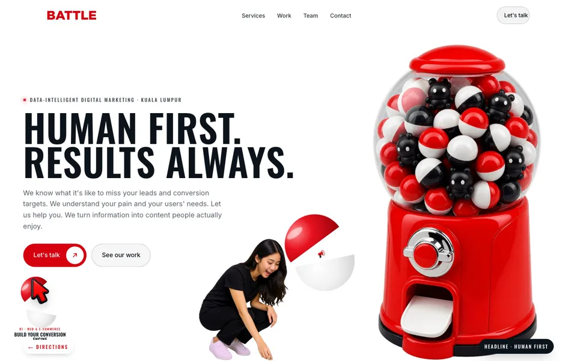
The new gachapon hero: poster headline, the machine scene, a knob you can turn, four services won one capsule at a time. Then the same sections.
Built in answer to "follow the current page style": v9.1's module layouts and motion (logo tiles that turn a row at a time, four service cards crowned by a toy, four impact tiles, the analytics export with the red scan and the wires, the case cover-flow, the photo ribbons, the prompt card) with none of the cube's material. Same heroes, same chat.
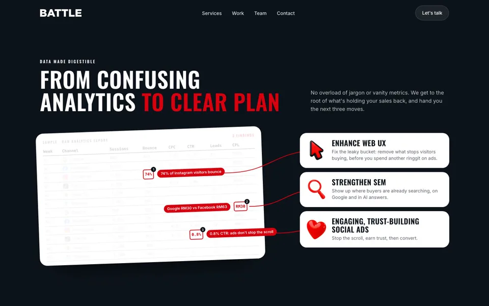
A white export on flat black, red wires, three white moves with a toy each.
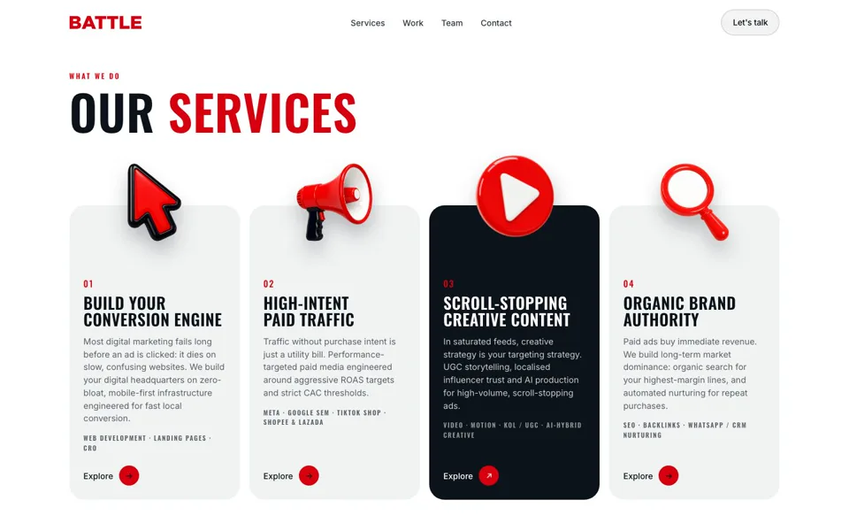
Four service cards crowned by toys; a card floods black under the pointer.
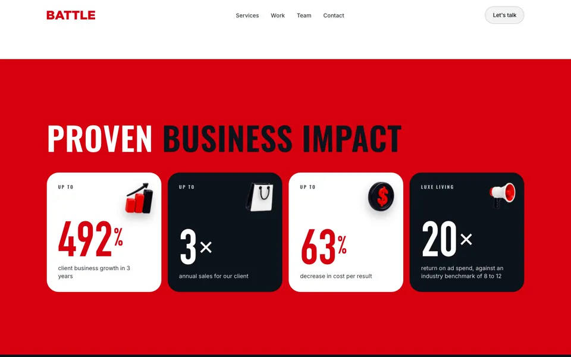
Four chunky impact tiles in brand colours on red, a toy on each.
David: "other modules can follow back v9 designs", and the 32 hero needed a revamp. So v11 keeps each hero and puts v9.1's own modules back under it, lifted from v9.1's stylesheet and scripts rather than redrawn: the logo keys that turn, the smoked-glass service cards, the four impact keys, the analytics export that a red scan settles and wires to three moves as you scroll, the case cover-flow, the photo ribbons, the red contact section. Changed: toys where the cube's pieces were, Battle's brand type and brand black, and the chat diagnostic kept from the last round (it now glides to Battle's reply when you tap a line). The 32 hero is rebuilt to the render the group picked: a giant machine packed with toys, a poster headline, two people at the machine; scroll or turn the knob and a capsule lands in his hands and opens into one service. People are generic fictional people from the image model, never Battle staff.
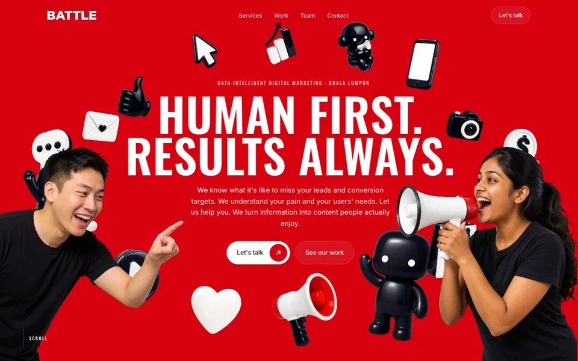
The red ring hero with its two people, then v9.1's modules on brand black. White toys fall from the hero into the logo wall.
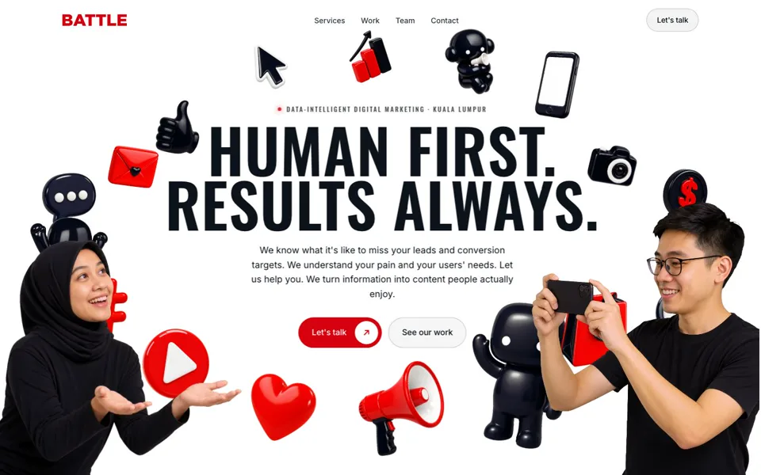
The white ring hero with its second pair of people, then the same v9.1 modules. Red toys fall into the logo wall.
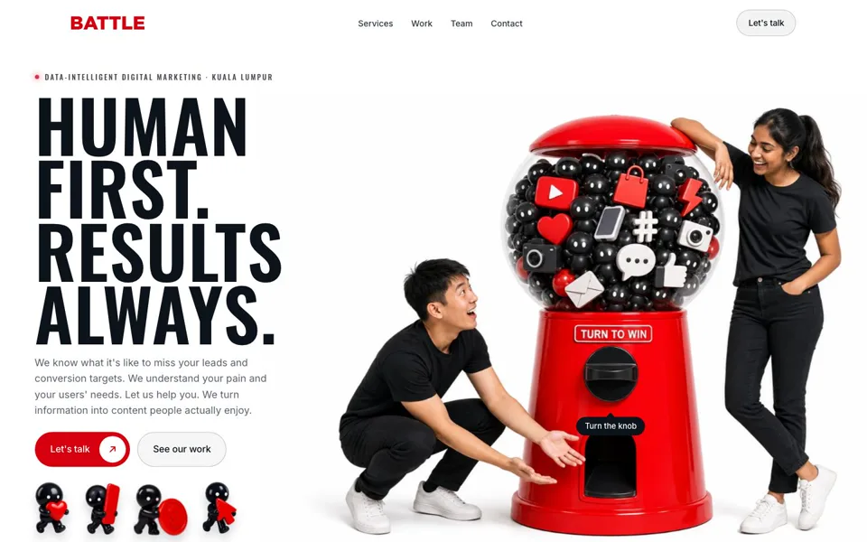
The new gachapon hero: poster headline, the machine scene, a knob you can turn, four services won one capsule at a time, a queue of toy characters. Then v9.1's modules.
Each one is a complete homepage: its hero, then Sue's eight sections from home-v10 in order (clients, services with the deck's diagnostic, impact, analytics to plan, case studies, team, the 15-minute call, footer) with the deck's copy and Battle's logo, colours and fonts. Open on a laptop, move the mouse, scroll; the pill at the bottom right switches the headline. Phones get a lighter version. Round 6 (same evening): David picked the version with people, so each hero now has people leaning into the scene as in the 21 render. They are generic fictional people from the image model, never Battle staff; for the real site they would be shot with the team. Add ?people=0 to a page address to see the hero without them. Round 7 (11 Nov): David called the sections below the hero flat, so every one of them is rebuilt as a full-bleed scene in the hero's language: logo capsules that speed up with the scroll, service rows that flood red and open, the diagnostic as a chat, four impact numbers on one baseline, a pinned scroll scene where thirty metrics resolve into three moves, a case list whose photo wipes to the client you point at, and the hero person back for the 15-minute call.
Two people lean in from the edges while the white and black toys orbit the headline on brand red; the ring tilts with the mouse and flies past as you scroll, and the people fly past with it. The same toys drift through the sections, and the analytics tangle straightens into three moves.
Red and black toys on white with a second pair of people at the edges: the same orbit, mouse tilt and fly-through, with the dark impact band and a paper-grey client wall. Nine new red and black pieces were made for it.
Opens inside the dome, zooms out to the machine, dispenses the four services into a tray while someone crouches by the machine waiting for each capsule. The capsule carries on below: service cards in capsules that pop open on hover, a capsule on every impact number, capsules drifting through the contact section.
Two live prototypes, each with a short screen recording for the group. Open the prototype on a laptop, move the mouse and scroll. The pill at the bottom right switches the headline between Sue's new line and the current site line.
22's airy ring of objects and black characters on 21's red page. The ring orbits on its own, tilts with the mouse, pieces dodge the cursor; scrolling flies you through it into the white services section.
Opens zoomed into the pile inside the dome. The first scroll pulls back to reveal the machine; every scroll after that drops a capsule that opens into one service, four in all, collected in a tray.
Concept renders by gpt-image-2 of the above-the-fold hero only, to pick a feeling before anything is built. Faces are generic fictional people, never Battle staff. Each card says what the direction is and which part of the brief it carries hardest. Tap an image to zoom.
Sue's reply to the first round: start from 07 Bento or 08 Mascot, add the ring of 3D objects from her mood slide ("Choose Your Way", "Cluep"), but in the red and with the black vinyl-toy characters of the right-side posters. Six takes below; every object and character is red, white or black only.
Sue: "do we want so literal human?" David: if the sections below carry the team photos, the hero can be cleaner and go for wow. Ten heroes with no human faces or bodies: objects, characters, type, and in one case a pair of hands.
Pick one or two to develop into a full homepage (hero, proof strip, services, cases, team, contact) with the real photos and real copy. Mixing is fine: e.g. 07's bento structure with 02's sticker energy, or 16's chair inside 13's wall.